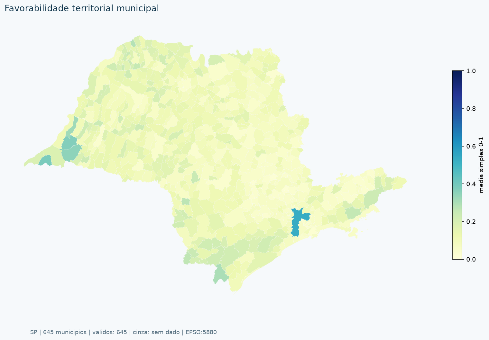
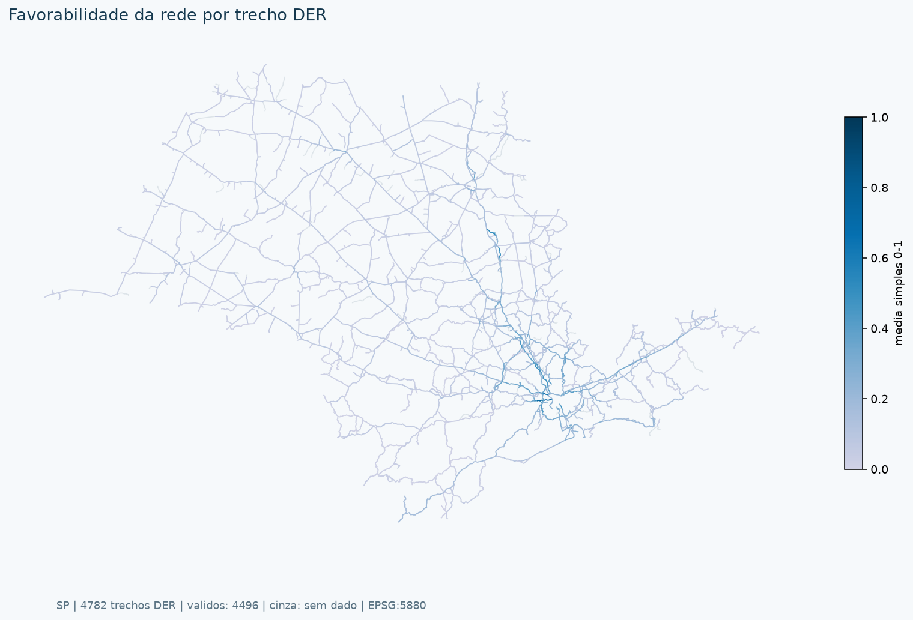

Contextualização e escopo
A priorização do PLI-SP exige distinguir necessidade territorial, benefício adicional e prontidão da intervenção. Este estudo calcula contexto municipal e pressão rodoviária por trecho da malha DER, sem afirmar que localização, proximidade ou demanda existente demonstram o retorno de um projeto.
A predominância de critérios de rede responde à demanda governamental pelo modal rodoviário e não é tratada como viés. Não há desagregação do PIB por setor censitário. PIB per capita, população e densidade são apresentados como contexto, sem peso autônomo.
Objetivos
- Retificar a cadeia premissa → critério → variável → cálculo, preservando a distinção entre as três fases.
- Calcular indicadores municipais reais, preservar snapshots e tornar rastreáveis suas fontes, unidades e limites.
- Gerar superfícies separadas por média simples, com denominador comum e possibilidade de ponderação iterativa por AHP.
- Identificar correlações, lacunas e oportunidades de enriquecimento sem inventar valores ausentes.
A amostra é instantânea, em pontos médios de trechos, e não caracteriza lentidão recorrente. Extensão representada por amostras não significa observação contínua de cada metro. Imputação não conta como observação.
Matriz de critérios e premissas retificada
Os 50 critérios de origem permanecem rastreáveis. Quatro foram calculados nesta rodada; os demais são triagem, atributos de projeto ou pendências. Não calculado não significa zero.
| Código / Fase | Critério e premissa | Variável / unidade | Espacialização e fonte | Situação |
|---|
Variáveis espacializadas
Uma variável por mapa; valores brutos e unidades originais. Variáveis territoriais são municipais; VDM, V/C e extensão são representados por linhas DER. Cinza identifica ausência de dado.
Premissas, critérios e espacialização
Condições dos critérios não calculados
Normalização e cálculo dos índices
A normalização min–max retira as unidades e orienta os indicadores de necessidade para a escala 0–1. Não comprova comensurabilidade de benefícios nem elimina escolhas de valor. Os limites são os da rodada preservada; extremos podem comprimir a distribuição. Critérios constantes não discriminam e devem ser retirados da composição, não premiados.
Maior valor significa maior necessidade/intensidade no recorte adotado. Para futuro indicador de menor é melhor, a orientação é . A tabela XLSX preserva brutos e normalizados.
Superfície territorial
PIB e privação recebem metade do peso. Não alfabetização e falta de coleta recebem, indiretamente, 25% cada. Essa distribuição é um cenário, não uma preferência homologada.
Superfície de rede por trecho DER
Demanda e V/C recebem metade do peso. A normalização utiliza o universo de trechos, não os municípios. Trecho sem um dos indicadores permanece sem índice; não recebe zero nem redistribuição municipal.
As médias exigem todos os critérios ativos. Não há renormalização local para disfarçar lacunas. As duas superfícies permanecem separadas e não formam, por si, um ranking final de projetos.
Resultados: duas superfícies de favorabilidade

Territorial municipal

Rede por trecho rodoviário DER
Resultados por trecho DER
| Rodovia | Subtrecho / ID | Km inicial | Km final | Extensão km | VDM modelado | V/C modelado | Favorabilidade 0–1 |
|---|
Evolução iterativa: AHP e álgebra de mapas
Os resultados admitem revisão participativa por AHP: definir comparações pareadas, verificar consistência, registrar pesos e aplicar a média ponderada aos campos normalizados, separadamente em municípios e trechos DER. A álgebra de mapas deve preservar as mesmas unidades, máscaras e regras de ausência. Consistência AHP não valida automaticamente critérios ou dados.
Antes de homologar: confrontar escolhas de peso, estabilidade do topo do ranking, escalas, incerteza, componentes redundantes e efeitos distributivos. Este estudo não aplica pesos AHP fictícios.
Colinearidade e indicadores a desenvolver
Compartilhar fonte não torna critérios automaticamente redundantes; baixa correlação não prova independência. Avaliar informação adicional, sobreposição conceitual e sensibilidade. Correlacionar um índice com seus componentes é dependência por construção.
| Indicador proposto | Pertinência e cálculo | Fonte candidata / condição |
|---|---|---|
| Acessibilidade social | População adicional alcançando emprego, saúde e educação em um limite de tempo. Comparar cenários com/sem projeto. | IBGE, CNES/DATASUS, INEP e rede roteável. Não calculado. |
| Emprego e estrutura produtiva | Empregos formais por setor e município. Complementa PIB; não mede informalidade nem constitui benefício criado pelo projeto. | RAIS/MTE e SEADE, com ano e cobertura harmonizados. Não calculado. |
| Renda e vulnerabilidade validada | Renda domiciliar, pobreza ou IPVS. Preferir medidas de privação com validação externa; não usar PIB per capita como renda. | IBGE e SEADE, verificando disponibilidade e compatibilidade temporal. Não calculado. |
| Resiliência climática | Perda esperada e dias de interrupção evitados, criticidade de ligações e rotas alternativas. | SGB, Defesa Civil, ANA e inventários operacionais. Não calculado. |
| Saneamento e privação multidimensional | Ampliar o índice com esgotamento e abastecimento, respeitando universos censitários e tecnologias adequadas ao contexto rural. | Censo 2022/SIDRA e SINISA, com denominadores e cobertura validados. Não calculado. |
| Pavimento e sazonalidade | IRI/PCI e razão de sobrecarga sazonal. Não inferir conservação pela simples existência de pavimentação. | DER-SP/ARTESP, séries e levantamento técnico. Não calculado. |
Referências, fontes e reprodução
Respostas oficiais completas foram preservadas em insumos/. Os hashes e a auditoria permitem verificar exatamente a rodada utilizada. Nenhuma referência institucional é inventada para a base modelada.
Fundamentação metodológica
- SAATY, T. L. The Analytic Hierarchy Process. New York: McGraw-Hill, 1980. Comparações pareadas, pesos e consistência.
- BELTON, V.; STEWART, T. J. Multiple Criteria Decision Analysis: An Integrated Approach. Boston: Kluwer Academic Publishers, 2002. Estruturação do modelo e escolhas multicritério.
- KEENEY, R. L.; RAIFFA, H. Decisions with Multiple Objectives: Preferences and Value Tradeoffs. New York: John Wiley & Sons, 1976. Compensação e interpretação dos pesos.
- GEURS, K. T.; VAN WEE, B. Accessibility evaluation of land-use and transport strategies. Journal of Transport Geography, 12:127–140, 2004. Acessibilidade funcional, não mera proximidade.
- HM TREASURY. The Green Book: Central Government Guidance on Appraisal and Evaluation, 2022. Avaliação incremental de alternativas e incerteza.
Fontes efetivamente utilizadas
Reprodução na raiz do repositório: .venv\Scripts\python.exe -B documentacao/saidas_modelos/gpt_61_sol/gerar.py. Testes: .venv\Scripts\python.exe -B -m pytest documentacao/saidas_modelos/gpt_61_sol/test_calculos.py -q.